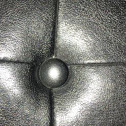
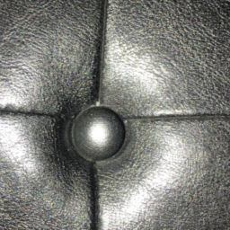
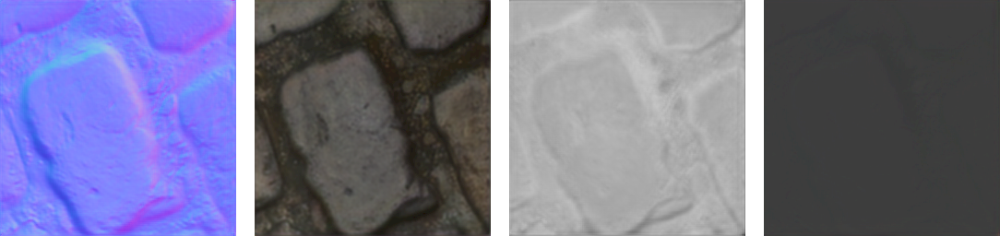
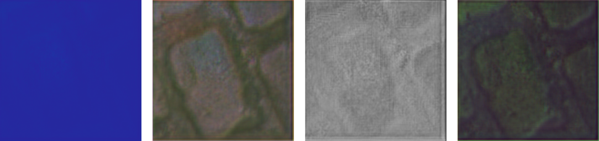

SVBRDF Estimation using a Physically-based Differentiable Renderer
Project by Markus Worchel (m.worchel@campus.tu-berlin.de)

Estimating scene parameters like geometry and material solely from images has been a widely researched topic, especially in the domain of computer vision. It is also of interest for a large industry including game development [TODO][TODO], movie production [TODO] as well as projects concerned with cultural heritage [TODO], as it enables them to create assets that faithfully capture objects of the real world. While there are well established methods for geometric reconstruction that are often able to leverage implicit knowledge about the camera setup, material reconstruction is a more ill-conditioned inverse problem. Recent advances in machine learning and computer graphics enable data-driven approaches that rely on light transport simulations for appearance-based material reconstruction. Differentiable renderers are an integral part of methods that use gradient-based optimization as they allow differentiating the rendering operation with respect to arbitrary scene parameters. Often, these renderers are handcrafted for the specific use case and deeply integrated into the processing pipeline. Thus, they are inflexible and lack reusability. On the other hand, there are stand-alone differentiable renderers, which provide a general framework for advanced light transport simulations. In this project, we will as a proof-of-concept replace the custom renderer embedded in an existing material reflectance pipeline with a general differentiable renderer. We show that integrating an external renderer in such a pipeline requires low effort if certain flexibility is given by the implementation and that parts of the renderer can be easily adapted to the specific use case if required.
Material Model
Figure 2

Visualization of the parameters of a SVBRDF. \(\mathbf{x}\) is a spatial position on the surface, \(\mathbf{\omega}_i\) the direction of irradiance and \(\mathbf{\omega}_o\) the direction of reflected radiance. \(\mathbf{n}\) is the local normal.
In computer graphics, surface reflectance properties are typically represented by a bidirectional reflectance distribution function (BRDF) \( f_r(\mathbf{\omega}_i, \mathbf{\omega}_o) \). It defines the fraction of (differential) irradiance coming from a direction \(\mathbf{\omega}_i\) that is reflected towards a direction \(\mathbf{\omega}_o\) [TODO]. As most surfaces are not fully homogeneous, the BRDF is usually given as a function of surface position \(f_r(\mathbf{x}, \mathbf{\omega}_i, \mathbf{\omega}_o)\), which is then also called spatially varying BRDF (SVBRDF). Figure 2 shows a visualization of the SVBRDF parameters. Note that the directional quantities in this function are relative to the local coordinate system that is defined by the surface normal \(\mathbf{n}\). Additionally, a physically correct BRDF fulfills two properties [TODO]:
- Helmholtz reciprocity: \(f_r(\mathbf{x}, \mathbf{\omega}_i, \mathbf{\omega}_o) = f_r(\mathbf{x}, \mathbf{\omega}_o, \mathbf{\omega}_i)\) for all \(\mathbf{\omega}_i, \mathbf{\omega}_o\)
- Energy Conservation: \(\int\limits_{\Omega} \, f_r(\mathbf{x}, \mathbf{\omega}_i, \mathbf{\omega}_o) \, \cos \theta_i \, d\mathbf{\omega}_i \leq 1, \) where \(\Omega\) is the hemisphere above \(\mathbf{x}\) and \(\theta_i\) the angle between \(\mathbf{\omega}_i\) and the surface normal \(\mathbf{n}\).
While it is possible to represent a BRDF as a set of samples over the full parameter space,
it is common to use simple and more intuitive models. The Cook-Torrance microfacet model [TODO]
is of particular interest for this project and will be the BRDF representation of choice.
In this model, the BRDF consists of two terms
\[ f_r(\mathbf{x}, \mathbf{\omega}_i, \mathbf{\omega}_o) = k_d f_d(\mathbf{x}) + k_s f_s(\mathbf{x}, \mathbf{\omega}_i, \mathbf{\omega}_o), \quad k_d + k_s = 1. \]
The diffuse component \(f_d\) is independent of the directions and captures effects
such as internal scattering or surface interreflections while
the specular component \(f_s\) captures explicit reflectance effects without surface penetration.
-- Surface consists of small differently oriented microfacets
-- Isotropic specular reflection -> only relative difference between \(\mathbf{\omega}_i\) and \(\mathbf{\omega}_o\) matter
- Four maps -> normal (in tangent space as variation from the macroscopic surface normal), diffuse albedo, roughness, specular albedo
(- Flat surface)
SVBRDF Estimation from Images
Deschaintre et al. [TODO] propose a method for reconstructing material reflectance of a flat surface only given a flash-lit photograph of it. While the imposed constraints are rather strict, we find the light-weight nature of the process very appealing. They cast material reflectance estimation as an image-to-image translation problem: an image is fed into a deep convolutional network which predicts the Cook-Torrance SVBRDF maps of the visible surface. Their follow-up work [TODO] extends the idea by using multiple uncalibrated but aligned images of the same surface (this is where the teaser image is taken from). While we initially planned to base the whole project on the multi-view approach, time constraints and lower overall complexity lead us to focus only on the single-view case. However, some ideas and the implementation reference are mainly borrowed from the multi-view approach.
Architecture
At the heart of the presented approach is a deep convolutional network that adopts the U-Net architecture [TODO] which has shown to be suitable for other image-to-image translation problems. The input to the network is a conventional three channel RGB image of the surface and the output is a nine channel image, where two channels represent the per-pixel normal (the z coordinate is inferred from the x and y coordinates), three channels represent the diffuse albedo, one channel represents the roughness and the last three channels represent the specular albedo. As this reflectance representation is conformant to the Cook-Torrance model (see section Material Model), the approach intrinsically assumes that the surface can be represented by it.
Figure 3

TODO: Description (size of the blocks is not to scale).
The used U-Net architecture implements an encoder-decoder structure resembling the well-known hourglass shape. A coarse overview of the network is shown in Figure 3. The encoder part consists of eight convolutional layers with feature counts 64, 128, 256, 512, 512, 512, 512, 512 that gradually reduce the spatial size of the image (using a stride of two) while increasing the number of features. The bottleneck is followed by a decoder part which again consists of eight layers that perform spatial upsampling followed by two convolutions. The decoding layers have similar feature counts as the encoding layers, only in reversed order with the last decoding layer having a feature count of nine to match the output format. In order to better reconstruct fine details that possibly have been lost in the bottleneck, each decoding layer is connected to the output of the same sized encoding layer through a skip connection. Leaky ReLUs with a negative slope of 0.2 serve as activation functions in these layers. The full-sized 9 channel decoder output is passed through a final tanh activation. The result is transformed into a valid SVBRDF by computing the z coordinates of normals from the given x and y coordinates as well as by bringing the diffuse albedo, specular albedo and roughness to the range [0, 1].
In order to stabilize training, the network performs instance normalization between each convolutional layer and its preceeding activation function. However, the authors found that this normalization reduces the network's ability to maintain non-local information effectively. They showed that even a simple task such as predicting a constant colored diffuse albedo can impose a significant challenge on such an architecture. Their proposed solution is a second network parallel to the main encoder-decoder track that explicitly propagates global information. Figure 4 shows a detailed visualization of the information exchange between the main track (in the encoding part) and the global track. The per-channel means that are subtracted by the instance normalization flow into the global track. They are concatenated with the previous feature vector, transformed by a fully connected layer and then pass through a SELU activation function. In the other direction, the previous feature vector is transformed by another fully connected layer and then added to the output feature maps of the instance normalization. Using this second track, the network is able to propagate non-local information as part of a global feature vector.
Figure 4

TODO: Description.
Note that specific details about the architecture of the single-view network are mainly extracted from the publicly available code of the multi-view approach. The single-view model (or at least a variation of it called 'Generator') is a subset of the multi-view model. There might be subtle differences between the model used in the single-view work and the single-view model presented here.
Data
Similar to other learning-based approaches, data is an integral part of this one aswell. In order to train the network presented in the previous section, several sample pairs of inputs and outputs, i.e., flash-lit images of the surface and their respective SVBRDF maps, are required. Since the latter is difficult to obtain for real world surfaces in the necessary quantity, the authors chose to use artificial training data that is representative for a large variety of real materials. More specifically, they obtained a set of 1850 samples (SVBRDF maps) by selecting 155 materials from Allegorithmic Substance Share (a dataset of artist-generated procedural materials) and permutating their important procedural parameters. In practice, we found their publicly available dataset to contain not 1850 but only 1628 samples: 1590 for training and 38 for testing.
Given an artificial material sample, the corresponding input image is generated by rendering a material patch placed in a virtual scene that contains one light source. The camera and light positions above the patch are randomly varied between samples to capture different alignments of camera lense and flash position as well as camera field of views. Additionally, variations of white balance, flash intensity and flash colors are simulated. The final image is then post-processed by adding Gaussian noise, clipping radiance and gamma encoding in an attempt to mimic common image degradations. Figure 5 shows three material samples and their corresponding rendered input images.
Figure 5


TODO: Description.
Since the amount of materials obtained this way is still too small, the authors propose to increase the variety by mixing randomly selected pairs of materials. Specifically, they combine different SVBRDF maps using alpha blending with a randomly chosen alpha value. The result of such a mixing operation can be seen in Figure 6. While they argue that the results stay close to real-world materials, it can be seen that the blend of certain material classes (e.g. stone and metal) does not produce physically plausible results. We still adopt this technique in order to increase the variety of unique samples and shading effects in the dataset.
Figure 6

TODO: Description.
The single-view work uses the above mentioned techniques to generate a fixed dataset offline, i.e., all material variations are precomputed and saved together with their renderings as individual files. The dataset contains roughly 200000 samples having a size of over 80 GB. The multi-view work pursues a lazy generation approach, where they generate material variations and input renderings at load time. This results in a significantly reduced dataset size of roughly 1 GB, as only the different base material samples have to be provided. As it is a clear improvement over the offline method, we also use the latter approach.
Training Objective
One important ingredient for training the network is the choice of training objective, i.e., the loss function. In the concret scenario, the loss function has to compare SVBRDF maps predicted by the network to the ground truth maps belonging to the input image. The obvious and most intuitive choice would be simple losses like \(l_1\) or \(l_2\) which compare the SVBRDF maps pixel-wise like multi-channel images. However, as the authors note, the current parametrization of the SVBRDF as Cook-Torrance maps is rather arbitrary and the magnitude of numerical differences between two parametrizations is only a weak indicator for their visual difference. They instead propose a loss function, that compares the appearance of two SVBRDFs, independent of their specific parametrization. This rendering loss renders both the ground truth SVBRDF as well as the estimated SVBRDF as flat material patches under varying viewing and lighting conditions and only compares the rendered images pixel-wise. More precisely, it computes the \(l_1\) loss between the log-transformed renderings. Figure 7 shows the difference of using only a simple \(l_1\) loss between SVBRDF maps and the rendering loss.
Faithfully comparing two SVBRDFs at each training step would require rendering them under a large amount of fixed light and camera positions to cover all possible angles. Instead, the authors went for a stochastic approach where only a semi-randomly sampled subset of nine configurations is evaluated at each step. In the first three configurations, the light and camera position are independently sampled from a cosine distribution over the upper hemisphere above the material patch. The remaining six configurations are intended to explicitly cover specular configurations, that appear less often when performing independent sampling but potentially carry rich information about the material in the appearing specular highlights. These configurations are obtained by only randomly sampling the view position and then using the mirrored vector as light position. By introducing a random shift and distance offsets, specular highlights of various sizes and positions on the material patch can be generated.


While the single-view work only relies on the rendering loss, the multi-view work complements the loss function by individual \(l_1\) losses between parts of the SVBRDF maps. The mixed loss is defined as \[L \triangleq L_\text{R} + 0.1 (L_\text{Normal} + L_\text{Diffuse} + L_\text{Roughness} + L_\text{Specular})\] where \(L_\text{R}\) is the rendering loss and \(L_\text{Normal}\), \(L_\text{Diffuse}\), \(L_\text{Roughness}\) and \(L_\text{Specular}\) are \(l_1\) losses between the normal maps, diffuse albedo maps, roughness maps and specular albedo maps, respectively. We also chose to adapt this mixed loss formulation for our loss function as the authors report this small supervision to stabilize the training.
Implementation
While there is a publicly available implementation of the multi-view work, there is none of the single-view one, unfortunately. This as well as the better flexibility of a custom implementation and for the sake of gaining practical experience in the project, motivated us to reimplement the presented method. As mentioned earlier, the implementation does not strictly follow the single-view work, but can be thought of as a crossover between both methods, as it adopts aspects of either one. Since the backend of potential renderers to integrate was known beforehand, the reimplementation is based on PyTorch as opposed to the original work which uses TensorFlow. By exporting our reimplemented PyTorch models with the library TensorboardX, we were able to visually inspect them in the Tensorboard web interface and verify their architectures by comparing them to the reference models.
Differentiable Rendering
Figure 8
TODO: Description. Notice, that in the scene with a static light, the highlights stay exactly the same, thus the BRDF is evaluated exactly the same.
In contrast to conventional forward renderers that, given a scene, synthesize an image, the renderer used for computing the rendering loss has to support a backward pass. More precisely, since training the network with backpropagation requires computing the gradients of all operations contributing to the loss function, the rendering itself has to be differentiable with respect to the scene parameters (in this case the SVBRDF maps). Renderers that allow differentiation through the rendering operation are called differentiable renderers.
In-Network Renderer
Similar to other works (e.g. [TODO] or [TODO]), the presented approach relies on a renderer that is directly integrated into the network architecture. It uses the same framework to formulate the rendering steps as is used for implementing and training the models. As pointed out by the authors, frameworks like TensorFlow or PyTorch provide certain advantages when implementating a differentiable renderer, like automatic GPU acceleration and differentiation. Similar to the models themselves we also reimplemented the renderer in PyTorch and used it for both, generating artificial input images as well as evaluating the rendering loss.
When comparing the renderer output to traditional renderings, it is noticeable that even when the location of the camera is not immediatly above the material patch, there is no perspective distortion. This results from the renderer operating in the coordinate space of the patch as opposed to traditionally operating in the coordinate space of the image plane in front of the camera. When thinking in terms of rays that originate from the camera center, each pixel in the resulting image corresponds to a ray that samples a specific point on the material patch. The animations in Figure 8 visualize the difference between this patch sampling approach and a conventional perspective rendering. The technique is advantageous when computing the rendering loss, as it only produces pixels that depend on the SVBRDF parameters. In contrast, a perspective rendering, would most likely contain pixels that do not show the material patch, thus have a gradient of zero.
Figure 9

TODO: Description.
While we tried to follow the original in-network renderer as close as possible, ours still differs from it in some details (mainly the Cook-Torrance implementation) and two major points. First, we do not simulate the flash as spot light with angular fall-off, but rather use a simple point light with radial fall-off. This was done for simplicity in our implementation but also for compatibility with the renderer to be integrated. It does not directly pose a problem to the rendering loss but rather affects the input image generation as it is meant to produce artificial flash-lit images. Therefore, the network might perform worse than expected when fed with real captured images. Second, we don't use ambient lighting, so the scene is only illuminated by one light source. While we initially assumed that it would not be very beneficial to use ambient lighting, we saw certain problems when rendering metallic materials without it. As reflection on metals is dominated by the specular component, only specular highlights are really visible, leaving the rest of the material patch unlighted (see Figure 9). Thus, some structural information is lost when generating the input renderings. Again, this might affect the results for real images negatively as in real scenes there usually is some form of environment lighting (other light sources or indirect illumination).
Differentiable Path Tracer
Figure 10
(a) In-network renderer
(b) Redner
Outputs of both renderers for the same scene (perspective view).
While the in-network renderer is sufficient for the specific task at hand, it lacks the flexibility to be potentially useful for other variations of the same problem. A major issue of the scene representation is its constraint to only contain one material patch, one type of camera and one (point) light source (multiple spot lights in the reference implementation). Additionally, the renderer only supports local shading, so only direct illumination from light sources contributes to the final image. If one wants to support more complex geometry or scenes, these scenes need to be representable and global illumination has to be considered for a faithful light transport simulation. Finally, relying on automatic differentiation can lead to wrong gradients for the rendering operation as it becomes non-differentiable at the presence of occlusions. Extending such custom renderers with the required features can become a tedious task and complete reimplementations for a different use case create redundancy. Therefore, in this project we propose to solve such inverse problems using general differentiable renderers which are developed as stand-alone systems.
As a proof-of-concept we integrated Redner [TODO], a differentiable path tracer, into the presented single-view approach. This general purpose renderer supports arbitrary scenes composed of meshes, light sources and environment lighting. Due to it being a path tracer, it inherently simulates global effects like indirect illumination and shadows. Although the renderer itself is written in C++, it provides Python bindings and is compatible with PyTorch. Thus, integrating it into our framework was rather straightforward from a technical point of view and only three details required special attention. First, the renderer assumes a Blinn distribution [TODO][TODO] instead of a GGX distribution [TODO] for the microfacets. As a consequence, the interpretation of the roughness is different and we need to convert the roughness values before rendering our SVBRDFs with Redner. Second, all lights in the scene need to be represented as area lights instead of point lights. Since we want to produce similar looking images for the same scene independent of which renderer is used (in-network or Redner), we tweaked the size of the area light to match the appearance of the point light source in the in-network renderer. Figure 10 shows a scene rendererd with both renderers (perspecively mapped). As a result, both the brightness and size of specular highlights are comparable. Third, Redner supports only common camera types like perspective or orthographic cameras. Due to its advantages for the task at hand, we implement a patch sampling camera similar to the one used by the in-network renderer. The implementation of such a camera in a path tracer turned out to be rather simple: whenever a primary ray is requested for a position \(\mathbf{u}\) in the image, we treat it as if it was located on the material patch and point the ray at the corresponding patch position in 3d space. The most tedious and error-prone part was the definition of the backward pass, which required manual derivation of all computations related to the new camera type.
Evaluation
In this section, we will evaluate both, the capability of differentiating outputs of the renderers with respect to SVBRDF parameters as well as the performance of our implementation for SVBRDF estimation from images.
Differentiability of the Rendering Operation
In order to verify that the renderers presented in section Differentiable Rendering are able to differentiate the rendering operation with respect to arbitrary SVBRDF parameters, we conducted a series of small optimization tests. Although for Redner this requirement should be fulfilled by design, it is still helpful to confirm its workings and check the correctness of our patch sampling camera extension. In all experiments that include Redner, we used 16 samples per pixel in the forward pass and 8 samples per pixel in the backward pass. Figure [TODO] shows results of both renderers for the first experiment. Given a fixed configuration of camera and light, the goal of the experiment is to find a normal map that when used in rendering, reproduces the target image rendered with the ground truth normal map. Thus, we start with a randomly initialized normal map and optimize its values only by comparing the rendered result to the target. All other parameters like diffuse albedo, roughness and specular albedo are the same between target and estimate and are kept fixed. We use the \(l_1\) loss between the images as loss function and Adam [TODO] as optimizer (same learning rate for both renderers). While the normal map does not converge to the ground truth normal map as expected, the result still looks like the target image. A notable difference between the in-network renderer and Redner is the longer convergence time, which might be caused by flatter or more noisy gradients in the path tracer.
Figure TODO
TODO: Description.
Figure [TODO]
shows an extension to the first experiment for the in-network
renderer. Each of the four animations correspond to the optimization
of one SVBRDF map while keeping the other maps fixed.
Instead of only having a fixed loss function with
one camera and light position, we directly use the rendering loss.
Since there are now multiple configurations of camera and light
for each optimization step, we show the per-step average target and
average estimate image. By optimizing the SVBRDF maps
in this way, we are able to recover good approximations
of the ground truth maps only through visual comparison.
Figure TODO
TODO: Description.
The only outlier is the estimate of the roughness map which still appears very noisy after 200 iterations. As the roughness contributes to two rather complex terms in the BRDF model (microfacet distribution and geometry function) we ran two more experiments with either of the terms disabled. The results in Figure [TODO] suggest that the slow convergence of roughness is only a consequence of the combination of both terms. The dependence of the combined terms on the roughness is possibly more complex than that on the normals (which they also depend on), which might results in more noisy gradients and makes the optimization more challenging. Overall, these experiments show that the in-network renderer is able to correctly differentiate through the rendering operation and also that our formulation of the rendering loss is correct.
Figure TODO
(a) Without distribution term
(b) Without geometry term
TODO: Description.
Figure [TODO] shows the same optimization experiments when using Redner and our patch sampling camera. One notable difference to the in-network renderer is that the area light in the scene can (partially) occlude the material patch because in the used version of Redner it is impossible to hide area light meshes. However, while this affects the rendering visually, it does not break the optimization. Since the appearance of the area light does not depend on the SVBRDF maps, the gradients of the pixels it covers are zero, so they simply do not contribute to the optimization step.
Figure TODO
TODO: Description.
Interestingly, the roughness converges faster than for the in-network renderer. As mentioned earlier, Redner uses a Blinn microfacet distribution, which is much simpler than the GGX distribution. This supports the hypothesis for complex functional relationships as cause for slow roughness convergence of the in-network renderer. The diffuse and specular maps seem to converge to (noisy) approximations of the ground truth maps, with the specular map converging a little bit slower at the floorboard gaps. A similar behavior can be observed for the in-network renderer (iteration 150), although it is not as apparent. The outlier here is the normal map which, while it resembles the ground truth normal map at some parts, does not converge to a very good approximation, at least not in the time given. The results in Figure [TODO] were produced using the built-in perspective camera instead of our patch sampling camera and they show that the convergence behavior is not caused by a bug in our extension to Redner. To this point, we cannot explain the behavior. Since the loss is decreasing it might converge to a (good) approximation after a very long time, but the slow convergence time is suspicious anyway. It is possible that there is still a bug in the renderer, similar to an earlier issue that completely prevented optimization of normal maps due to wrong gradient computations.
Figure TODO
TODO: Description.
SVBRDF Estimation
Our reimplementation of the single-view work was done in a way that allows plugging in different renderers to be used for computing the rendering loss. This flexibility enabled us to train the model from scratch with either of the renderers. We used 1590 training samples and the online data generation approach explained earlier to increase the variety of materials and augment the base samples. The model that uses the in-network renderer was trained for 2050 epochs and a batch size of 8 (roughly 400000 training steps). We use the following formula to convert from epochs to training steps \[ \text{steps} = \frac{0.99 \cdot 1590 \cdot \text{epochs}}{8}, \] where the factor 0.99 results from a 1% validation split. Unfortunately we did not compute the validation loss at training time, so we cannot report any results. We used the Adam optimizer for training the network but only with half the learning rate (\(1 \cdot 10^{-5}\)) of that used in the reference work. This stabilizes the training a little bit more but results in slower convergence. As opposed to the reference, we also did not use any adaptive learning rate techniques. The model that uses Redner as renderer was trained for 377 epochs. The low number of epochs is mainly a limitation of the largely increased training time. From the time measurements we estimated that training with the in-network renderer takes approximately 1 hour per epoch while Redner requires 8.5 hours on average. This discrepancy mainly results from the increased complexity of the path tracing operation but also the more involved approach of differentiation. We show rendered SVBRDFs produced by the reference single-view model, our in-network model and our Redner model on a set of artificial input images (Figure [TODO]) as well as on real images captured with mobile phones (Figure [TODO]).
Figure TODO
(a) Input image
(b) Reference
(c) In-network renderer
(d) Redner
Input images and rendered results of different models. The images show artificial surfaces rendered with our renderer from ground truth SVBRDFs.
The reference model seems to produce plausible results for all input images, except for the metallic sample. As mentioned earlier, this is due to a limitation of our data generation approach which does not use any ambient lighting for input image rendering. This results in low brightness areas for specular materials, where the models have difficulties with picking up useful information. Overall, the in-network model is able to produce results comparable to the reference, despite of some weaknesses like normal maps not being as pronounced and an apparent bias to glossy materials. While the Redner model is at least able to correctly extract some color information, the estimated materials appear as mostly flat and unstructured surfaces.
Figure TODO
 


(a) Input image
(b) Reference
(c) In-network renderer
(d) Redner
Input images and rendered results of different models. The images show real surfaces captured with mobile phones. First three images by Deschaintre et al. [TODO].
Considering the low number of training steps it has gone through, the weak performance of the Redner model is not a surprise. However, there is another factor that decreases its training performance. The slow convergence times observed in the differentiability experiments seem to result in a network that is learning much slower than that using the in-network renderer. Figure [TODO] shows SVBRDF maps estimated by an in-network model that was trained for roughly the same number of epochs in comparison to the SVBRDF estimated by the Redner model. The estimate of the in-network model appears much more pronounced and detailed at this stage.
Figure TODO
(a) In-network renderer (313 epochs)

(b) Redner (377 epochs)
SVBRDF estimates produced by models trained with different renderers but roughly the same number of epochs.
Naturally, we tried to train the Redner model for a longer time to see how the quality of the estimation evolves over time. Unfortunately, as the network was trained for a longer time, we noticed more and more issues appearing, like the loss suddenly becoming invalid or increasing by a large margin. Figure [TODO] shows the training loss over time for both the in-network model and a Redner model that was trained for 467 epochs. While the in-network model learned until the training was terminated, the loss of the Redner model decreases but spikes to a plateau after around 75000 steps (~381 epochs).
Figure TODO
(a) In-network renderer (2500 epochs)
(b) Redner (467 epochs)
Training loss of models trained with different renderers.
Although we observed a similar behavior when using a previous version of Redner (3.11) that contained a bug in gradient computation, we are not certain if this behavior in the current version (3.14) is related in any way. Figure [TODO] shows SVBRDF estimates produced with models that are trapped on a plateau for both versions. The outputs contain constant colored maps which suggests that some of the layers in the network have been completely thrown off by the optimization. As explained in the section containing the differentiability experiments, the slow convergence of the normal map might hint at another bug in the renderer.
Figure TODO
(a) Redner version 3.11 (24 epochs)

(b) Redner version 3.14 (467 epochs)
SVBRDF estimates produced by models that were trained with different versions of Redner and became trapped on a plateau during training.
Conclusion
- Originally intended to use Mitsuba 2 (not released at the time but now is)
Downloads
Presentations
Topic Presentation (pdf, pptx)
Technical Presentation* (pdf, pptx)
Intermediate Presentation* (pdf, pptx)
Final Presentation* (pdf, pptx)
*videos only in pptx
Data and Code
https://github.com/mworchel/svbrdf-estimationReferences
- [6] Aittala, M., Aila, T., Lehtinen, J., 2016, Reflectance Modeling by Neural Texture Synthesis
- [1] Bishop, L., Cowan, C., Jancosek, M., 2017, Photogrammetry for Games: Art, Technology and Pipeline Integration for Amazing Worlds, https://www.gdcvault.com/play/1024340/Photogrammetry-for-Games-Art-Technology, last retrieved March 2020.
- [6] Blinn, Z. F., Newell, M. E., 1976, Texture and reflection in computer generated images
- [6] Blinn, Z. F., 1977, Models of light reflection for computer synthesized pictures
- [2] Brown, K., Hamilton, A., 2016, Photogrammetry and 'Star Wars Battlefront', https://www.gdcvault.com/play/1022981/Photogrammetry-and-Star-Wars-Battlefront, last retrieved March 2020.
- [2] CultLab3D, https://www.cultlab3d.de/, last retrieved April 2020.
- [2] Giardina, C., 2018, 3D Face Scanning Start Up In Talks With Studios for Film Use, https://www.hollywoodreporter.com/behind-screen/3d-face-scanning-start-up-talks-studios-film-use-1075170, last retrieved April 2020.
- [3] Deschaintre, V., Aittala, M., Durand, F., Drettakis, G., Bousseau, A., 2018, Single-Image SVBRDF Capture with a Rendering-Aware Deep Network.
- [4] Deschaintre, V., Aittala, M., Durand, F., Drettakis, G., Bousseau, A., 2019, Flexible SVBRDF Capture with a Multi-Image Deep Network.
- [6] Gao, D., Li, X., Dong, Y., Peers, P., Xu, K., Tong, X., 2019, Deep Inverse Rendering for High-Resolution SVBRDF Estimation from an Arbitrary Number of Images
- [6] Kingma, D. P., Ba, L. J., 2015, Adam: A Method for Stochastic Optimization
- [6] Li, T.-M., Aittala, M., Durand, F., Lehtinen, J., 2018, Differentiable Monte Carlo Ray Tracing through Edge Sampling
- [5] Pharr, M., Jakob, W., Humphreys, G., 2016, Physically Based Rendering: From Theory to Implementation [5] O. Ronneberger, P.Fischer, and T. Brox, 2015, U-Net: Convolutional Networks for Biomedical Image Segmentation
- [6] Torrance, K. E., Cook, R. L., 1982, A Reflectance Model for Computer Graphics
- [6] Walter, B., Marschner, S. R., Li, H., Torrance, K. E., 2007, Microfacet models for refraction through rough surfaces